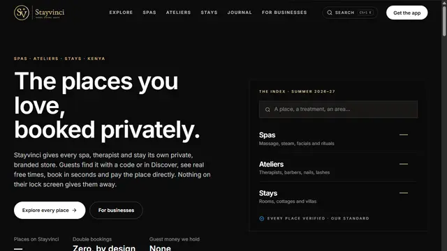

Stayvinci: a premium, multi-tenant booking and storefront platform
Stayvinci lets hospitality and service businesses ("Houses") run bookings and a storefront under their own brand, while guests discover and book them. I'm building the whole platform, from the database to the apps.
Why I'm building it
I wanted to build a platform end to end, from a product specification to the database policies, and to solve a problem I care about: giving each business its own discreet, branded store, payments to its own merchant account, and staff roles, while sharing one well-run infrastructure.
Architecture

- One documented NestJS API serves four apps from a Turborepo monorepo.
- Shared packages: request/response schemas and roles, a typed API client (SDK), a design system, and lint/TypeScript presets, so the apps and API can't drift apart.
- Runs on PGlite (PostgreSQL in WebAssembly) for zero-install development, or PostgreSQL 16, Redis and Mailpit through Docker Compose.
Tenant isolation
In a multi-tenant system, the worst bug is one business seeing another's bookings. So isolation is enforced in the database with PostgreSQL row-level security, not only in application code: even a query that forgets its filter can only see the current tenant's rows.
- Separate platform roles (Stayvinci staff) and tenant roles (inside a House), with explicit permission rules.
- Sensitive fields encrypted with a dedicated data-encryption key; sign-in codes hashed with a server-side pepper.
- Passwordless sign-in by email link (SMS planned).
Product journey
The specification walks a business through every stage, each with its states and edge cases:
- Joining: plan, agreement and account.
- Connecting their own merchant account for payments, with neutral descriptors, marketplace fees, refunds and reconciliation.
- Verification with Kenya-specific requirements by business type.
- Store setup with a guided checklist, then bookings from guests.
Thirty showcase stores are seeded so the full flow can be demonstrated and tested end to end, and stores can be bulk-imported from JSON.
Quality
Every change must pass linting, type checks, automated tests and a full build before it goes in, so the main branch is always releasable.
What's next
Wiring the remaining apps to the API, the Expo mobile guest app, and onboarding the first paying businesses. Launching Stayvinci is one of my main goals.